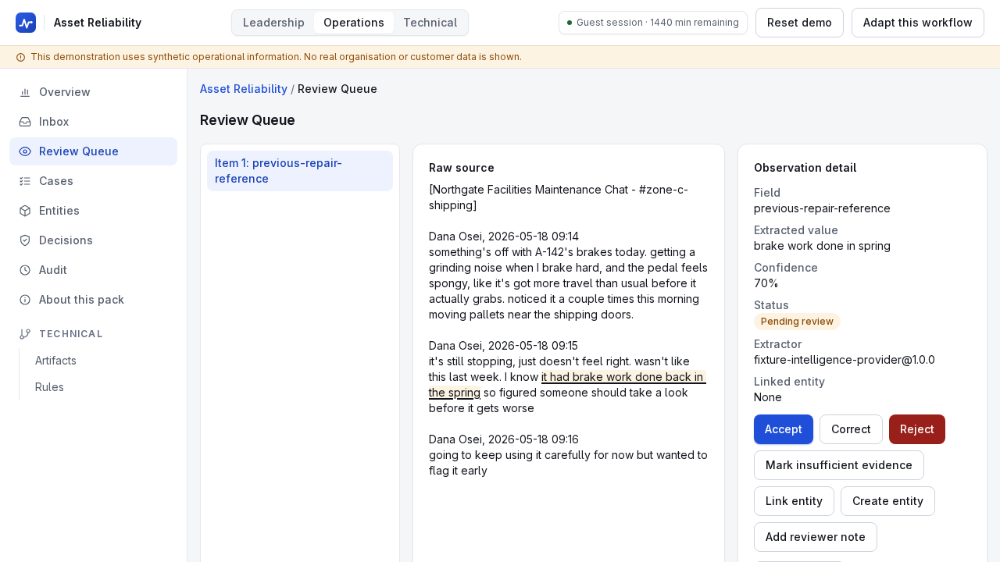
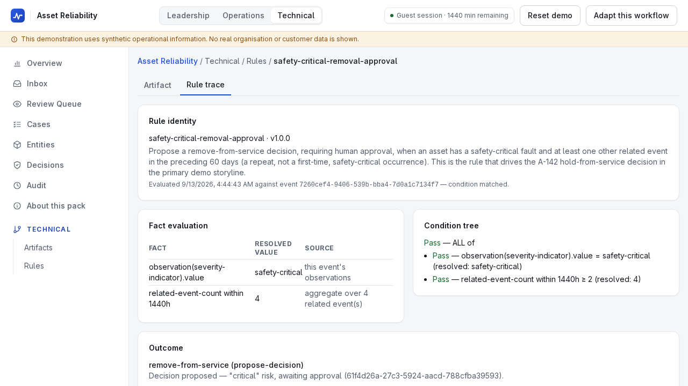
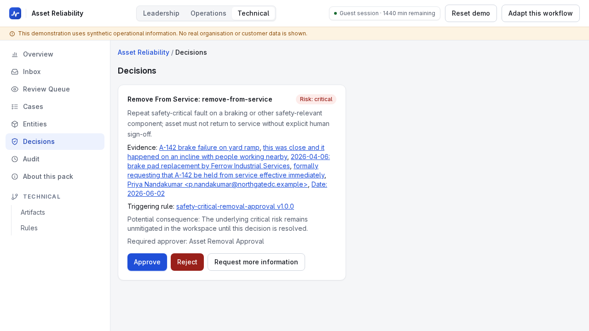
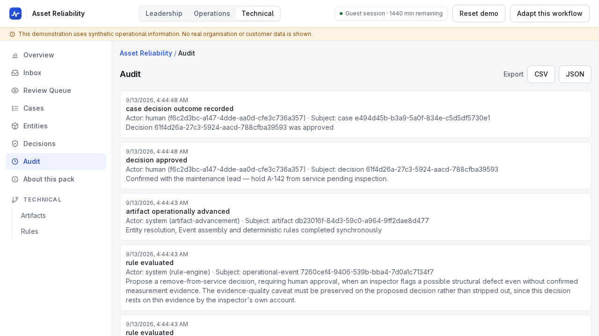
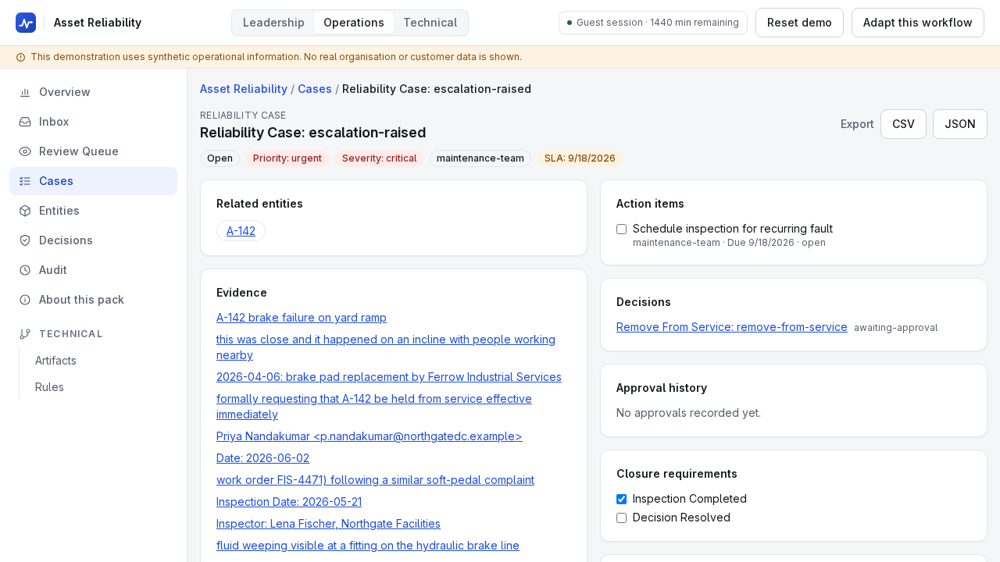

One synthetic brake fault on forklift A-142, followed from a group-chat message to a recorded human approval. Every name and record is fictional.
May 18. A worker writes that the brakes grind and the pedal feels spongy, and mentions brake work "back in the spring". The forklift is still stopping.
An April pad-replacement CSV, a May inspection report, a June 2 ramp incident, a hold-from-service email and a repair update.
"Brake work done in spring" came out at 70% confidence, so it was queued for review with the exact words underlined, not accepted.

Rule safety-critical-removal-approval needs a safety-critical reading plus at least two related events inside 60 days. In the recorded case it counted four.

The output is a critical-risk "remove from service" decision, awaiting approval. The rule only proposes. A person has to approve it.

A person approves with a required comment. That creates a separate Approval with approver, outcome and time, and only then does the decision move to approved.
The review acceptance and the approval each leave an entry. Each entry has an actor, a subject and a timestamp, and the trail exports as CSV or JSON.

After approval the case is still open and the inspection action still has no completion recorded. The system does not assume a repair happened.

Synthetic data. A fixture provider replays authored extractions; no live model. The approval was scripted and no maintenance lead was consulted. A demo, not production.